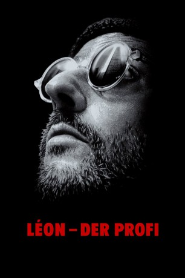

Alternativ: Léon: The Professional (Englischer Titel)
 
 IMDB-Wertung: 8.6 / 10
IMDB-Wertung: 8.6 / 10  IMDB-TOP-Platzierung: 30
IMDB-TOP-Platzierung: 30  Metascore:
Metascore: 
Die 12-jährige Mathilda wächst nicht gerade in den besten Verhältnissen auf: Ihre Mutter arbeitet als Prostituierte, ihr Vater versteckt Drogen für den korrupten Polizisten Norman Stansfield. Als sich dieser eines Tages betrogen fühlt, richtet er kurzerhand die ganze Familie hin und nur Mathilda entgeht dem Massaker knapp. Verzweifelt bittet sie ihren wenig gesprächigen Nachbarn Léon um Hilfe, der sie nur widerwillig in die Wohnung lässt. Schon kurze Zeit später stellt sie fest, dass er sein Geld als Profikiller verdient. Sie beschließt ebenfalls Cleaner zu werden, um den Mord an ihrer Familie zu rächen...
Jahr: 1994
Dauer: 110 Minuten
FSK: 16
Land: Frankreich Studio: Astro DistributionTonspuren: DTS - ,
Untertitel:
Auflösung: 1080p (1920x816) Größe: 11059 MB
Regisseur:  Luc Besson
Luc Besson
Drehbuch: Luc Besson
Soundtrack: Éric Serra
Darsteller:
 Jean Reno als Léon
Jean Reno als Léon Gary Oldman als Stansfield
Gary Oldman als Stansfield Natalie Portman als Mathilda
Natalie Portman als Mathilda Danny Aiello als Tony
Danny Aiello als Tony Peter Appel als Malky
Peter Appel als Malky Don Creech als 2nd Stansfield man
Don Creech als 2nd Stansfield man Michael Badalucco als Mathilda's Father
Michael Badalucco als Mathilda's Father Ellen Greene als Mathilda's Mother
Ellen Greene als Mathilda's Mother Frank Senger als Fatman
Frank Senger als Fatman Maïwenn als Blond Babe
Maïwenn als Blond Babe Robert LaSardo als Client #1
Robert LaSardo als Client #1 Adam Busch als Manolo
Adam Busch als Manolo Jernard Burks als Stansfield man
Jernard Burks als Stansfield man Samy Naceri als Swat 1
Samy Naceri als Swat 1 Hélène Cardona als Student , uncredited
Hélène Cardona als Student , uncredited Randolph Scott als 4th Stansfield man
Randolph Scott als 4th Stansfield man George Martin als Receptionist
George Martin als Receptionist Stuart Rudin als Leon's Taxi driver
Stuart Rudin als Leon's Taxi driverDatei: X:\1994\Léon - Der Profi (1994, FSK16, 1920x816).mkv seit 03.02.2015
Festplatte: HD 1992-1995
 Es gibt insgesamt 67 Filme in der Gruppe '1994'
Es gibt insgesamt 67 Filme in der Gruppe '1994'